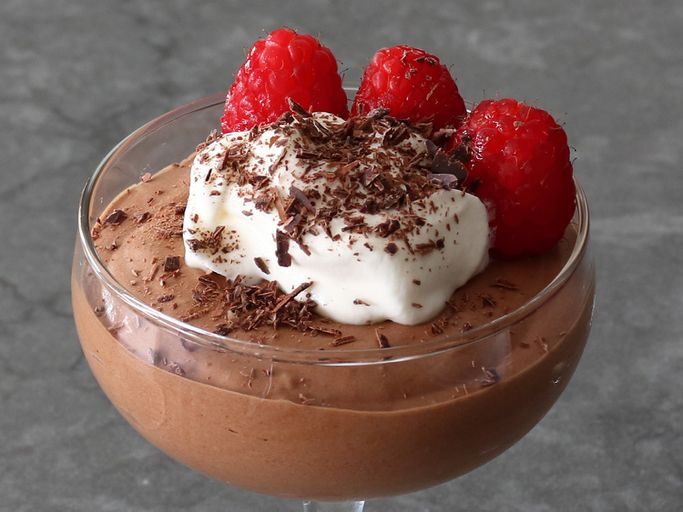

Chocolate Mousse Recipe
Home

The Best Chocolate Mousse Recipe Ever
This recipe is so great, it just might be better than my last 2
Ingredients
- 3 1/2 ounces dark chocolate (62% cacao is ideal)
- 1 tablespoon unsalted butter
- 2 large egg yolks
- 1 large tablespoon white sugar
- 1/4 cup water
- 1 tiny pinch salt
- 1/2 cup chilled heavy whipping cream
Instructions
- Break up or chop chocolate into small pieces and set aside with butter.
- Add egg yolks, sugar, water, and salt to a metal mixing bowl. Cook, whisking, directly over medium-low heat until the mix is thick, foamy, and hot to the touch. (145 to 150 degrees F (63 to 65 degrees C))
- Once the yolk mixture is thick and hot, add chocolatye and butter, and whisk until all chocolate is melted. Let rest for a few minutes on the counter, whisking occasionally to further cool the mixture to just above or at room temperature. The chocolate mixture shouldn't go into the whipped cream while still warm, but if cooled too long, the mixture may get too firm to fold in.
- Whisk cold cream until medium still peaks form. If cream is whisked further, it will separate and the final texture will be grainy.
- Transfer about 1/3 of chocolate mixture into whipped cream, and fold with a spatula until amost incorporated. Gently fold in remaining chocolate, trying to keep as much air in the mixture as possible.
- Transfer into 4 serving dished, wrap, and chill before serving, at least 1 hour.